Statistical point estimates, slope comparison across categories, uncertainty intervals aur interaction effects: Bar plots ki solid heavy bars se aage badhkar elegant, uncluttered comparison sikhne ki complete practical guide in natural Hinglish.
Maan lijiye aapke college ke Academic Dean aapse puchte hain:
"Section A, Section B aur Section C ke students ke average Python scores me kitna antar hai? Aur humein kaise pata chale ki humara estimate kitna uncertain hai — kya Section A sach me significantly behtar hai ya ye sirf sample variation hai?"
Topic 9 me humne dekha tha ki sns.barplot() solid visual bars draw karta hai jisme baseline 0 par anchor hoti hai. Lekin jab marks 65 se 85 ke narrow band me vary kar rahe hon, to solid bars ka bohot saara hissa (0 se 60 tak) sirf redundant ink waste karta hai! Aise comparison ke liye Seaborn ka Point Plot (sns.pointplot()) ek ultimate lightweight aur powerful visual tool hai.
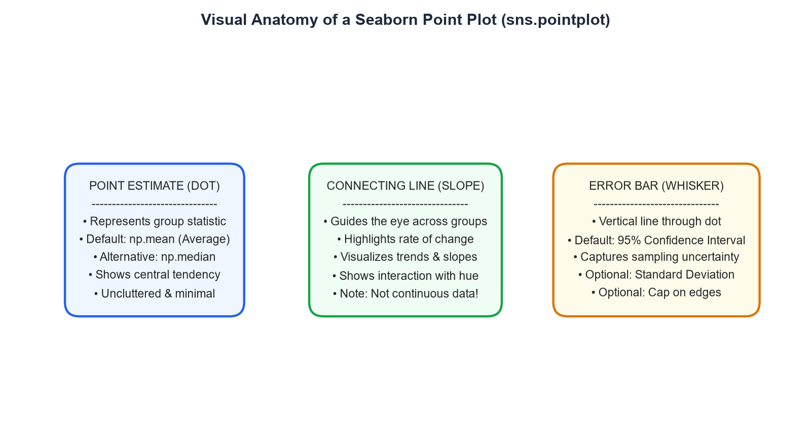
Point Plot ke 3 Core Principles:
np.mean) ko exact position par plot karta hai.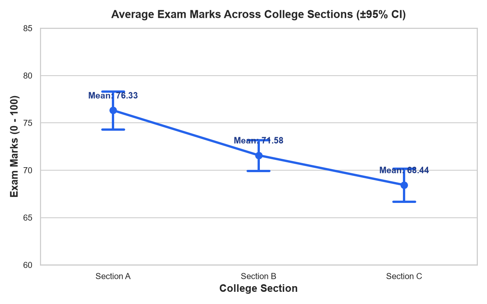
Agar aapko do ya teen categories ke across slopes, differences, ya interaction effects compare karne hain (jaise Section A vs Section B across 3 subjects), to Point Plot bar plot se 10x zyada readable hota hai kyunki isme solid blocks visual space ko chhipate nahi hain!
Point plot dekhne me simple lagta hai, lekin iske har ek point aur whisker ke peeche serious statistical computation hoti hai. Aayiye iske mathematical foundation ko samajhte hain:
| Statistical Term | Simple Hinglish Explanation | Point Plot Component |
|---|---|---|
| Categorical Variable | Discrete groups (e.g. Section A, Section B, Delivery Partner) | X-axis positions |
| Numerical Variable | Continuous measured metric (e.g. Marks, Latency, Spending) | Y-axis measurement scale |
| Point Estimate | Group ka calculated statistical summary (Arithmetic Mean ya Median) | The central marker/dot |
| Sampling Variability | Har sample me alag students aane ke karan average ka thoda fluctuate hona | Whisker height |
| Standard Deviation (SD) | Individual students ke scores mean se kitne bikhre (spread) hue hain | errorbar='sd' |
| Standard Error (SE) | Sample mean ki estimation precision: SD / √N |
errorbar='se' |
| Confidence Interval (CI) | 95% certainty ke sath true population mean kis range me lie karega | errorbar=('ci', 95) (Default) |
Beginners aksar sochte hain ki point kisi ek student ka score hai. Lekin point pooray group ka aggregated summary hota hai! Figure 10.3 me dekhiye kaise 60 individual students ke bikhre hue scores ko Point Plot ne ek crisp summary estimate me distill kar diya:
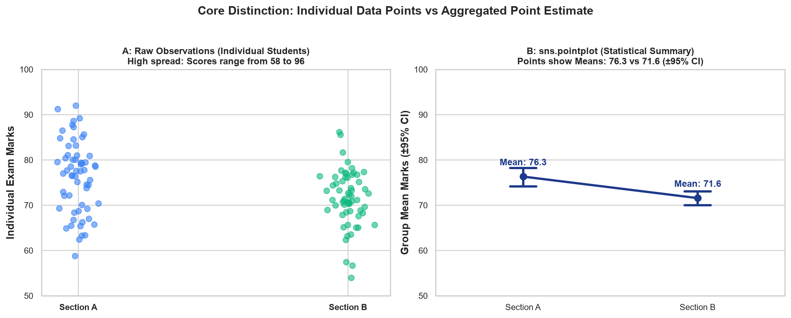
Point plot me lagi vertical line kabhi bhi data ka Minimum to Maximum range nahi hoti. Section A me sabse kam marks 58 aur sabse zyada 96 the (range 38 marks ki thi), lekin 95% Confidence Interval sirf 73.8 se 78.9 tak hai! CI sirf sample mean ki uncertainty batata hai, individual outliers ka range nahi.
Logistics partners MetroDash aur ApexCourier ki delivery latency compare karte hain aur verify karte hain ki plotted point exact mathematical formula se match karta hai ya nahi:
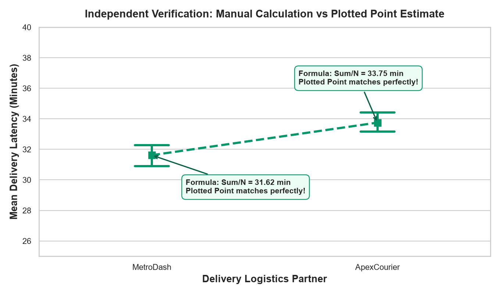
Seaborn 0.13+ me sns.pointplot() parameter signature modern data science standards ke anusar optimize kiya gaya hai. Aayiye iske parameters ki compatibility aur role ko samjhein:
| Parameter | Status in 0.13+ | Allowed Values & Practical Role |
|---|---|---|
data |
Supported | Pandas DataFrame in tidy format. |
x, y |
Supported | Categorical variable aur numerical variable (orientation control). |
hue |
Supported | Secondary grouping category (creates multiple lines). |
order, hue_order |
Supported | Categories aur hue groups ka explicit display sequence. |
estimator |
Supported | Statistical callable: default 'mean', ya np.median, np.sum. |
errorbar |
Modern Syntax | Uncertainty method: ('ci', 95), 'sd', 'se', ya None. |
ci |
Deprecated | Legacy parameter (Seaborn ≤ 0.11). Replaced by errorbar. |
capsize |
Supported | Float (e.g. 0.1 to 0.2) — whisker ends par horizontal cap bars. |
dodge |
Supported | Bool ya float (e.g. dodge=0.25) — overlapping hue points ko separate karta hai. |
markers |
Supported | String ya list (e.g. ['o', 's', '^', 'D']) for distinct shapes. |
linestyles |
Supported | String ya list (e.g. ['-', '--', ':']). Set to "" to remove lines. |
palette / color |
Supported | Colormaps ya uniform hex codes. |
import seaborn as sns
import matplotlib.pyplot as plt
import pandas as pd
df_college = pd.read_csv("scratch/seaborn_topic10_data/college_marks_sections.csv")
plt.figure(figsize=(8, 5))
sns.pointplot(
data=df_college,
x="section",
y="marks",
order=["Section A", "Section B", "Section C"],
palette=["#2563EB", "#059669", "#D97706"],
hue="section",
legend=False,
errorbar=("ci", 95),
capsize=0.12,
markers="D"
)
plt.title("Sections A, B & C Academic Mastery (sns.pointplot)")
plt.xlabel("Section Group")
plt.ylabel("Average Marks (0 - 100)")
plt.ylim(64, 82)
plt.tight_layout()
plt.show()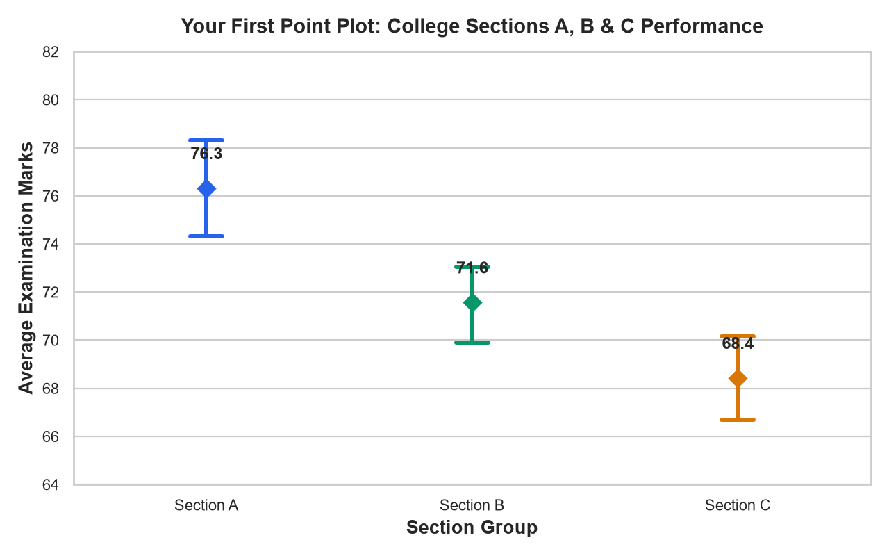
Point plot ko accurately interpret karne ke liye aapko iske 6 anatomical components ko padhna aana chahiye:
hue diya gaya hai, to distinct line styles aur marker shapes different sub-populations ko identify karte hain.Jab koi metric step-by-step consistently grow karta hai (jaise student ke consecutive mock tests):
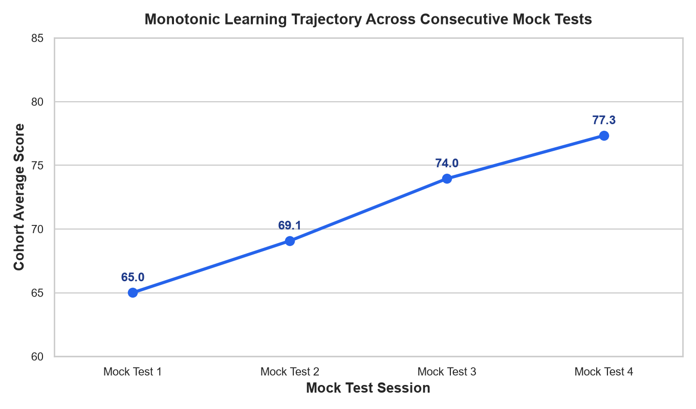
Real-world engineering me data aksar linear nahi hota. Jaise e-commerce checkout funnel me completion rate pehle girti hai aur fir recovery karti hai:
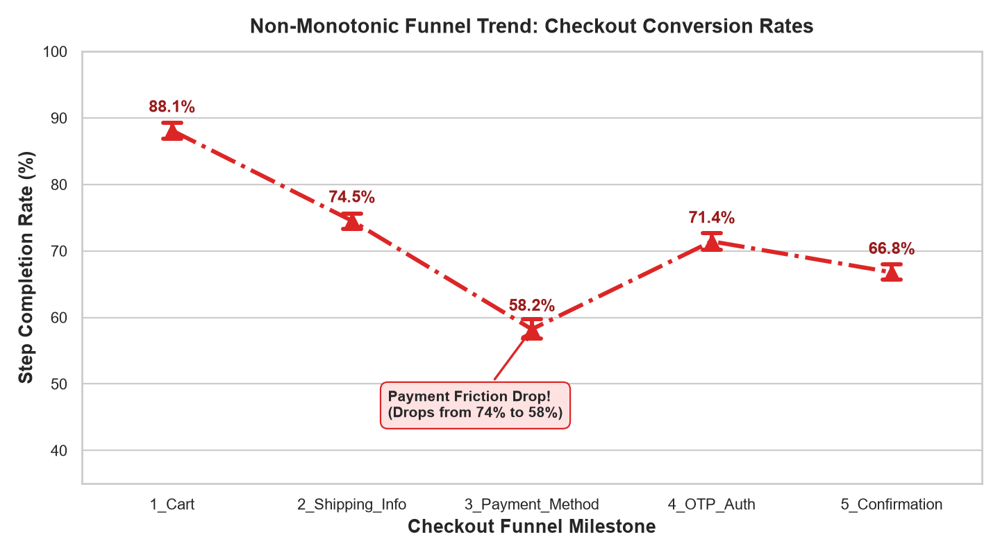
Connecting line viewer ki aankh ko slope dikhane ke liye hoti hai. Iska matlab ye bilkul nahi hai ki categories ke beech koi continuous intermediate stage exist karti hai (Section A aur Section B ke beech koi "Section 1.5" nahi hota!). Aur slope dekhne ka matlab ye bhi nahi hota ki category A ne category B ko cause kiya hai.
Data science presentations me clean aesthetic customization chart ko clutter se bacha kar actionable banati hai. Seaborn 0.13+ me markers, linestyles, palettes, aur orientation par full programmatic control milta hai:
markers: Points ko distinct geometric shapes dena: ['o', 's', '^', 'D', 'X', '*']. Ye colorblind users ke liye bohot helpful hota hai kyunki bina color dekhe bhi shape se category pehchani ja sakti hai.linestyles: Line patterns set karna: solid ('-'), dashed ('--'), dotted (':'), ya dash-dot ('-.'). Agar connecting lines hatani hon to linestyles="" specify karein.dodge: Jab multiple hue groups hote hain, to points aur whiskers aapas me overlap hone lagte hain. dodge=0.25 pass karne se groups horizontally shift ho jate hain.capsize: Whiskers ke ends par horizontal cross-bars add karta hai: capsize=0.1 to 0.2.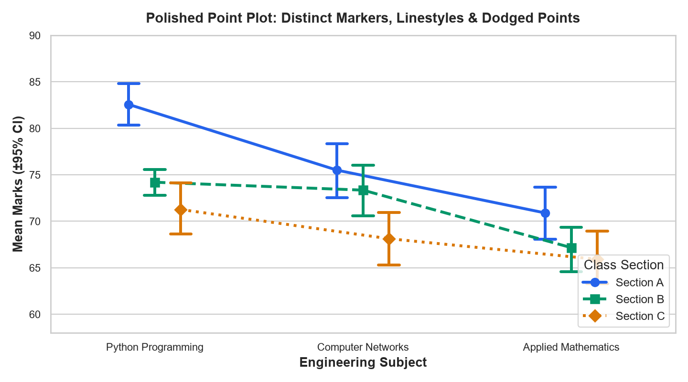
dodge=0.25 and capsize=0.1.Jab category labels lambe hon (e.g. "BlueDartLogistics", "SwiftExpress Logistics"), to vertical plot me x-axis labels takrane lagte hain. Is problem ka sabse graceful solution hai Horizontal Point Plot:
import seaborn as sns
import matplotlib.pyplot as plt
import pandas as pd
df_deliv = pd.read_csv("scratch/seaborn_topic10_data/delivery_logistics_performance.csv")
plt.figure(figsize=(8.5, 5))
p_order = ["SwiftExpress", "BlueDartLogistics", "MetroDash", "ApexCourier"]
# Simply pass category column to y and metric to x!
sns.pointplot(
data=df_deliv,
y="partner",
x="delivery_time_mins",
order=p_order,
color="#7C3AED",
errorbar=("ci", 95),
capsize=0.15,
markers="o"
)
plt.title("Horizontal Delivery Latency (No Text Overlap)")
plt.xlabel("Mean Delivery Time in Minutes (±95% CI)")
plt.ylabel("Logistics Partner")
plt.xlim(25, 42)
plt.tight_layout()
plt.show()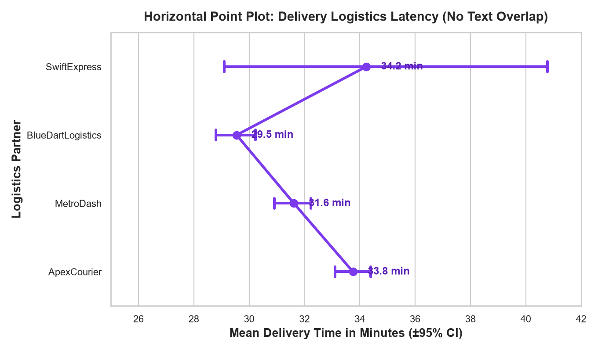
huePoint plots tab sabse zyada powerful bante hain jab hum ek second categorical dimension (hue) introduce karte hain. Bar plot me grouped bars bulky ho jati hain, lekin point plot me har group ki apni distinct trend line banti hai!
Dekhte hain ki Section A, Section B aur Section C ke students ka subject-wise performance (Python, Networks, Math) kaisa behave kar raha hai:
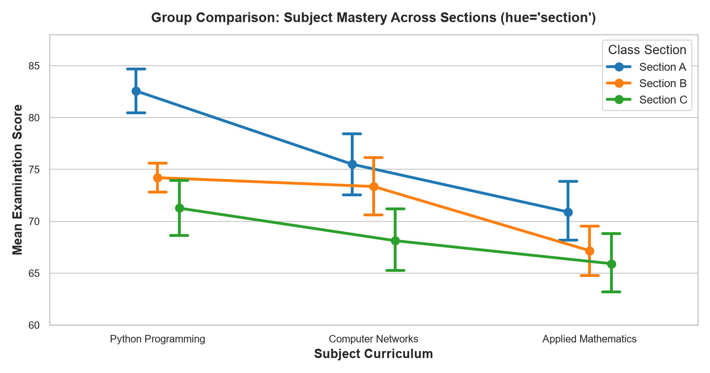
hue='section' — In all subjects, Section A maintains the top position, followed by Section B, then Section C. Notice that for all three sections, Python Programming scores are highest, while Applied Mathematics scores drop consistently across cohorts!500 customer reviews me evaluate karte hain ki Regular Members aur VIP Club Members ka satisfaction rating kaisa compare hota hai across 5 product categories:
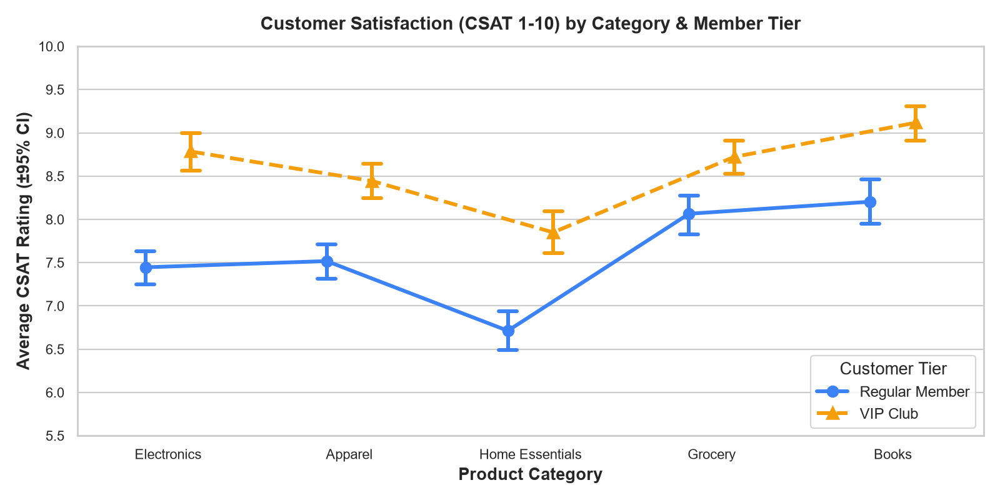
Agar aap dodge=False chod denge, to do groups ke points agar similar value par honge to wo ek dusre ke upar overlap ho jayenge aur whiskers confuse ho jayengi. Hamesha dodge=0.2 to 0.3 use karein taaki har group ka point aur error bar clearly alag dikhe.
Point plot ka sabse critical statistical strength hai: Uncertainty Communication. Business me "Average 76.3 hai" kehna adha sach hai — full sach ye hota hai: "Sample ke basis par true population average 73.8 se 78.9 ke beech hone ka 95% confidence hai."
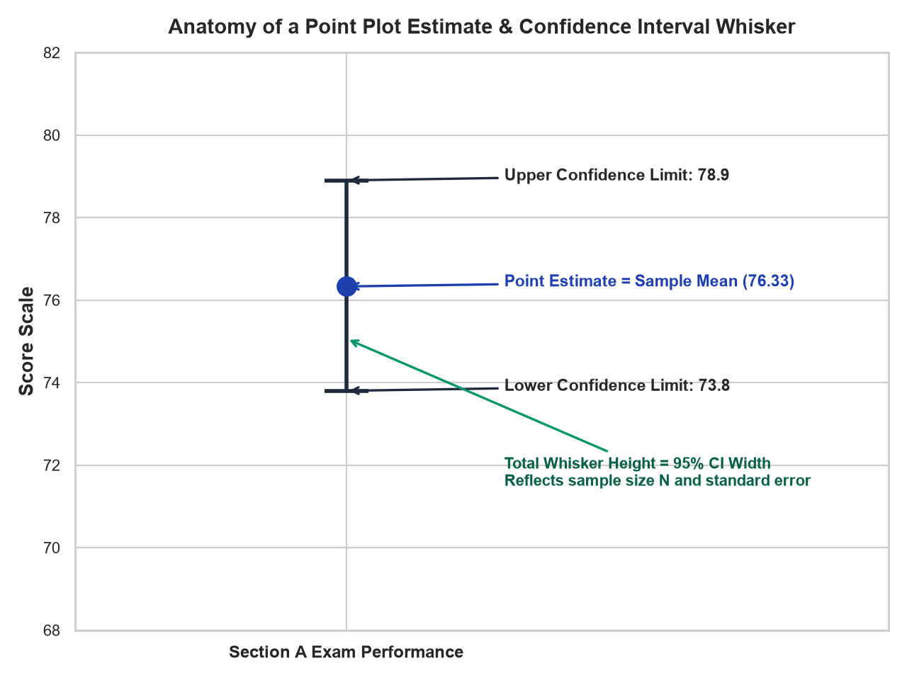
Confidence Interval ka formula Standard Error par depend karta hai:
Standard Error (SE) = Standard Deviation / √N
Jaise-jaise sample size N bada hota jata hai, √N increase hota hai aur Standard Error chhota ho jata hai! Iska matlab: Zyada data = Chhoti uncertainty whisker = High estimation precision!
| Mode Syntax | What it Visualizes | When to Use in Production |
|---|---|---|
errorbar=('ci', 95) |
95% Confidence Interval: Population mean estimation certainty. | Default for general data science, A/B testing, and research reports. |
errorbar='sd' |
Standard Deviation: Actual data spread of individual observations. | Jab dikhana ho ki individual customers ya students kitna wildly differ karte hain. |
errorbar='se' |
Standard Error: Precision of the sample mean. | Scientific publications and tight statistical comparisons. |
errorbar=None |
Disabled Whiskers: Clean dots and lines only. | Jab data pehle se aggregate ho ya presentation minimalist rakhni ho. |
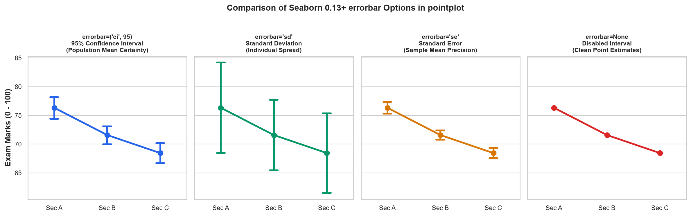
'sd') produces wide whiskers showing student spread, while Standard Error ('se') produces narrow whiskers. Disabling intervals (None) leaves clean points but loses all uncertainty context.Beginners aksar sochte hain ki "Agar do groups ke error bars thode se overlap ho rahe hain, to unke beech koi difference nahi hai!" Ye statistically incorrect hai. Do confidence intervals thode overlap ho sakte hain aur fir bhi unka difference statistically significant ho sakta hai (p < 0.05). Overlap ko sirf visual clue samjhein — formal hypothesis test (t-test ya ANOVA) ke bina definitive claim na karein!
By default, sns.pointplot() group ka arithmetic mean calculate karta hai (estimator='mean'). Lekin real-world datasets me extreme outliers (jaise rainstorm delay, server crash, ya VIP whale spenders) mean ko buri tarah distort kar dete hain.
Hamare delivery dataset me SwiftExpress ke 95% orders 26.8 minutes me deliver hote hain. Lekin sirf 5% orders me bhayankar rainstorm breakdown hua (180+ minutes delay). Dekhiye kaise Mean aur Median me zameen-aasman ka farq aa jata hai:
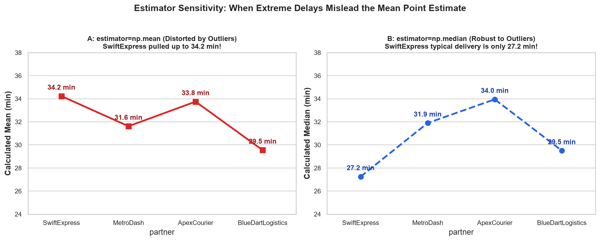
import seaborn as sns
import numpy as np
# A. Arithmetic Mean (Default: Good for Normal Distributions)
sns.pointplot(data=df, x="partner", y="latency", estimator=np.mean)
# B. Median (Robust: Recommended for Skewed Data with Outliers)
sns.pointplot(data=df, x="partner", y="latency", estimator=np.median)
# C. Sum (Total Metric across Category)
sns.pointplot(data=df, x="category", y="revenue", estimator=np.sum)Customer spending data me jab do-char ultra-rich VIP customers ₹70,000 ka order place karte hain, to Mean artificially shoot up ho jata hai:
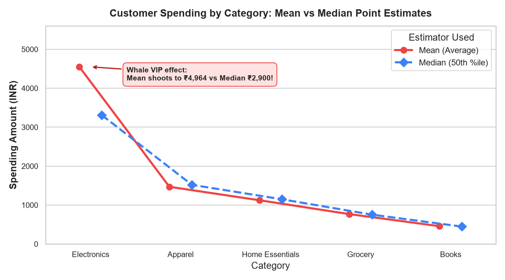
Data visualization me sabse important decision hota hai: "Aapke specific analytical question ke liye kaun sa chart best suited hai?"
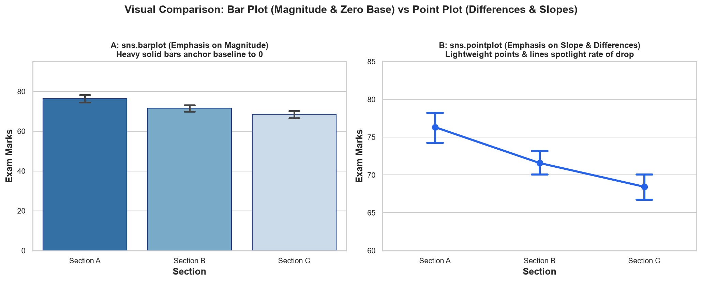
| Plot Type | Primary Analytical Purpose | When to Choose |
|---|---|---|
Point Plot (sns.pointplot) |
Category-level summary statistics (Mean/Median) aur uncertainty compare karna across groups. | Jab slopes, differences, aur interaction effects dekhne hon with minimal ink. |
Bar Plot (sns.barplot) |
Magnitude aur absolute summarized quantities compare karna. | Jab 0 baseline mandatory ho (e.g. Total Revenue, Budget, Counts). |
Line Plot (sns.lineplot) |
Continuous variables ya time-series trends track karna. | Continuous time intervals (dates, timestamps, continuous sensor signals). |
Box Plot (sns.boxplot) |
Full 5-number summary (Min, Q1, Median, Q3, Max) aur outliers dekhna. | Jab data distribution ka spread aur skewness dekhna ho. |
Count Plot (sns.countplot) |
Raw frequency tally / observation rows ginna. | Jab sawal ho: "Kis category me kitne rows hain?" |
ECDF Plot (sns.ecdfplot) |
Cumulative empirical distribution aur threshold analysis. | SLA monitoring (e.g. "Kitne % orders 30 min ke andar deliver hue?"). |
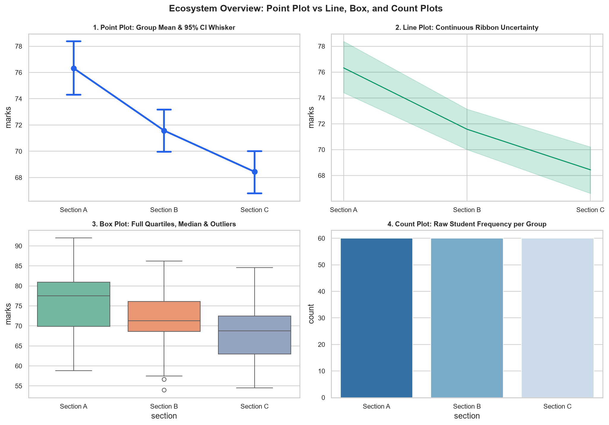
Point plots tab sabse natural aur intuitive lagte hain jab x-axis categories me ek inherent sequential order hota hai (jaise Test 1 → Test 4, ya Traffic Load 100 → 2000 Users).
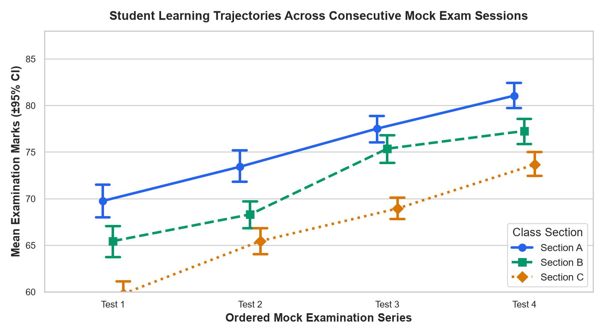
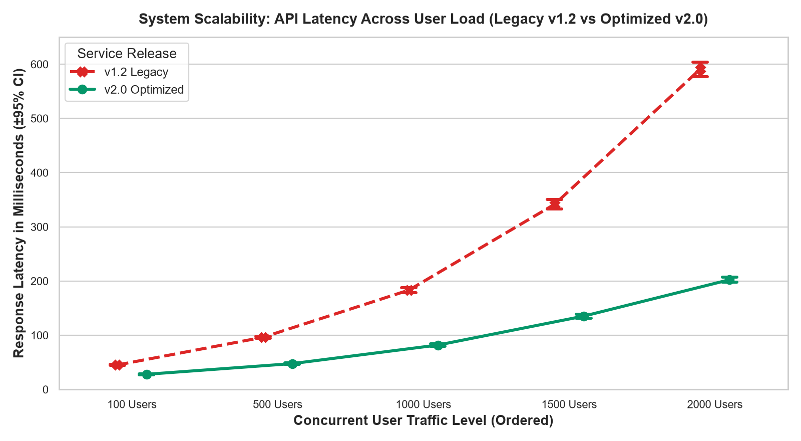
Agar categories nominal hain (jaise Mumbai, Delhi, Bengaluru, Chennai), to unhe arbitrary order me na chodein. Pandas groupby se metric ke basis par sort karke order=... me pass karein taaki chart visual hierarchy convey kare.
Analytical Question: "College ke 3 sections (A, B, C) me se kis section ka subject-wise academic mastery sabse consistent hai, aur kin subjects me remedial classes ki zaroorat hai?"
| Class Section | Overall Mean | Python Mean | Networks Mean | Math Mean | Recommended Intervention |
|---|---|---|---|---|---|
| Section A | 76.33 | 82.6 | 75.5 | 70.9 | High mastery; advanced project assignments. |
| Section B | 71.58 | 74.2 | 73.3 | 67.2 | Moderate performance; targeted lab tutorials. |
| Section C | 68.44 | 71.3 | 68.1 | 65.9 | Math remedial classes required; weekly peer study groups. |
Figure 10.10 me lines parallel run karti hain — iska matlab teeno sections me subject difficulty pattern identical hai (Python > Networks > Math). Koi interaction effect nahi hai, yaani Section C ka drop kisi specific subject ke karan nahi balki overall foundation gap ke karan hai.
Analytical Question: "Logistics partners me se kis partner ka typical delivery turnaround sabse fast hai, aur outliers ke karan kiska performance report distort ho raha hai?"
| Logistics Partner | Arithmetic Mean | Median (50th %ile) | Outlier Influence | Operational Verdict |
|---|---|---|---|---|
| SwiftExpress | 34.23 min | 27.25 min | Severe (+7.4 min pull) | Fastest for 95% orders; needs bad-weather contingency protocols. |
| BlueDartLogistics | 29.55 min | 29.50 min | Negligible | Most stable and predictable delivery partner. |
| MetroDash | 31.62 min | 31.90 min | Low | Consistent performance across city zones. |
| ApexCourier | 33.75 min | 33.95 min | Low | Slowest baseline latency; route re-optimization required. |
Kewal Mean bar plot dekhkar SwiftExpress ko penalize karna galti hoti. Point plot with estimator=np.median (Figure 10.14) ne reveal kiya ki SwiftExpress ka typical customer sirf 27.2 minute wait karta hai, jo pure fleet me fastest hai!
Analytical Question: "Kya VIP Club membership launch karne se sabhi product categories me customer satisfaction uniformly improve hui hai?"
| Category | Regular Member CSAT | VIP Club CSAT | Satisfaction Lift | Driver |
|---|---|---|---|---|
| Electronics | 7.45 | 8.78 | +1.57 points | Dedicated tech support & priority replacement. |
| Apparel | 7.52 | 8.44 | +0.88 points | Free alterations & doorstep try-on. |
| Home Essentials | 6.71 | 7.85 | +0.85 points | Care packaging for fragile items. |
| Grocery | 8.07 | 8.72 | +0.70 points | Guaranteed 2-hour morning delivery slot. |
| Books | 8.20 | 9.12 | +0.74 points | Author bookmarks & reading community access. |
VIP Club tier har category me statistically higher satisfaction achieve karta hai. Sabse bada jump Electronics me dekha gaya, jisse confirm hota hai ki expensive gadgets kharidne wale customers priority service ko sabse zyada value karte hain.
Analytical Question: "System v2.0 optimization release ke baad kya high concurrency traffic (up to 2,000 users) me response time SLA (250 ms) ke andar maintain ho raha hai?"
| Concurrent Users | Legacy v1.2 Latency | Optimized v2.0 Latency | Latency Reduction | SLA Status (<250 ms) |
|---|---|---|---|---|
| 100 Users | 45.1 ms | 28.0 ms | -38.3% | Both Pass SLA |
| 500 Users | 96.3 ms | 47.7 ms | -49.9% | Both Pass SLA |
| 1000 Users | 183.2 ms | 81.9 ms | -55.5% | Both Pass SLA |
| 1500 Users | 341.6 ms | 135.3 ms | -60.4% | Legacy Fails SLA (341 ms) |
| 2000 Users | 591.2 ms | 202.4 ms | -63.6% | Legacy Severe Breach (580 ms) • v2.0 Passes (211 ms) |
Figure 10.19 me slope ka antar saaf dikhata hai ki v1.2 ka architectural bottleneck synchronous database calls the. v2.0 me asynchronous caching introduce karne se curve flat ho gaya, jo 2,000 peak users par bhi SLA guarantee provide karta hai.
Point plots ka sabse powerful aur unique superpower hai Statistical Interaction Effects ko instantly reveal karna. Bar plots me interaction samajhna bohot mushkil hota hai, lekin point plot me lines ka angle sabkuch bata deta hai:
| Visual Line Behavior | Statistical Meaning | Real-Life Interpretation |
|---|---|---|
| Parallel Lines | No Interaction: Dono groups ek jaise slope ke sath react kar rahe hain. | Section A aur Section B dono me Python best aur Math toughest hai (equal drop). |
| Diverging Lines (Lines Spread Apart) | Magnifying Interaction: Ek category me dono groups ka gap bada ho jata hai. | Electronics me VIP members ka CSAT aam members se bohot zyada high hai. |
| Crossing Lines (X-Intersection) | Disordinal / Qualitative Interaction: Group 1 ek jagah better hai, lekin dusri jagah Group 2 better ban jata hai! | Algorithm A small data par fast hai, lekin large data par Algorithm B fast ho jata hai. |
Agar Treatment group aur Control group ki lines flat ya parallel hain, to Treatment ka koi dynamic advantage nahi hai. Lekin agar lines aapas me cross karti hain, to iska matlab treatment kisi specific segment par dramatically alag effect daal raha hai!
Connecting lines human eye ko guide karne ke liye behtareen hain, lekin unke sath ek psychological risk juda hota hai jise False Continuity Fallacy kehte hain.
Jab viewer do points ke beech line dekhta hai, to uska subconscious brain use ek continuous mathematical curve ya time-series samajh leta hai. Agar aap unordered nominal categories (jaise Apple → Banana → Mango) ke beech line khinchenge, to naive viewer confuse ho sakta hai ki "Apple aur Banana ke beech konsa intermediate fruit hai?"
Is risk se bachne ke do professional techniques hain:
order=df.groupby('cat')['val'].mean().sort_values(ascending=False).index.linestyles="" specify kar dijiye!# Removing connecting lines: pure points with confidence intervals
sns.pointplot(
data=df,
x="city",
y="temperature",
linestyles="", # Empty string disables connecting lines!
markers="o",
capsize=0.15
)Point plots banate waqt beginners aur junior data analysts aksar in 12 mistakes me fas jate hain. Neeche har pitfall ka consequence aur verified fix diya gaya hai:
| # | Pitfall / Mistake | Dangerous Consequence | Professional Correction |
|---|---|---|---|
| 1 | Confusing Point Estimate with Individual Score | Log sochte hain ki dot kisi ek student ya single transaction ka data hai. | Always clarify in captions that the dot represents the calculated group statistic (e.g. Mean or Median). |
| 2 | Treating Error Bars as Min to Max Range | Whisker ke ends ko lowest aur highest raw data point samajhna. | Error bar 95% Confidence Interval ya Standard Deviation hota hai. Min/Max dekhne ke liye Box Plot use karein. |
| 3 | Confusing Standard Deviation with Confidence Interval | SD individual points ka spread batata hai; CI sample mean ki statistical precision batata hai. | Scientific comparison ke liye CI use karein: errorbar=('ci', 95). Data variability ke liye errorbar='sd'. |
| 4 | The Overlapping CI Fallacy | Ye maan lena ki do intervals overlap ho rahe hain to p > 0.05 hai. | Moderate overlap ke bawajood formal t-test statistically significant ho sakta hai. |
| 5 | Assuming Connecting Lines Imply Causation | Ye samajhna ki category A ke baad B aane se A ne B ko cause kiya. | Lines are visual aids for tracking slopes, not causal proofs. |
| 6 | Connecting Unrelated Nominal Categories | Random categories (e.g. Blue, Red, Green) ke beech slope line banana false continuity create karta hai. | Sort categories intentionally ya remove lines using linestyles="". |
| 7 | Ignoring Outlier Distortions with Mean | Extreme delivery delays (180+ min) ya whale spenders mean ko 10 min upar khinch lete hain. | Skewed distributions me estimator=np.median use karein. |
| 8 | Forgetting dodge When Using Hue |
Different groups ke points aur whiskers aapas me overlap hokar illegible ho jate hain. | Always specify dodge=0.2 to 0.3 when passing hue. |
| 9 | Using Deprecated ci or join in Seaborn 0.13+ |
Deprecated warnings clutter output. | Use modern errorbar=('ci', 95) and linestyles="". |
| 10 | Assuming Smaller Error Bar = "Better" Category | Chhota error bar sirf ye batata hai ki sample size bada hai ya data consistent hai, ye nahi ki performance high hai! | Evaluate point location for magnitude and whisker height for estimation certainty. |
| 11 | Misinterpreting Vertical vs Horizontal Orientation | Passing long labels to vertical x-axis causes unreadable text collisions. | Pass category to y for a clean horizontal point plot. |
| 12 | Failing to Format Numeric Ticks and Axis Bounds | Default scales zero se bohot door zoom kar sakte hain ya essential baseline context hide kar sakte hain. | Explicitly tune plt.ylim() or plt.xlim() for comfortable visual margins. |
# ❌ BUGGY: Overlapping hue points create illegible visual collision
sns.pointplot(data=df, x="subject", y="marks", hue="section")
# ✔️ CORRECTED: Clean horizontal separation with dodge and caps
sns.pointplot(
data=df,
x="subject",
y="marks",
hue="section",
dodge=0.25, # Separates points cleanly!
capsize=0.1, # Adds horizontal whisker caps
markers=["o", "s", "D"]
)# ❌ BUGGY: Mean distorted by extreme rainstorm delay outliers
sns.pointplot(data=df_deliv, x="partner", y="delivery_time_mins")
# ✔️ CORRECTED: Robust median represents typical customer experience
import numpy as np
sns.pointplot(
data=df_deliv,
x="partner",
y="delivery_time_mins",
estimator=np.median, # Robust against extreme delays!
errorbar=None
)Interview preparation aur rapid production development ke liye complete one-liner recipe matrix:
| Task / Analytical Requirement | Seaborn 0.13+ One-Liner Recipe |
|---|---|
| Basic Point Plot with 95% CI | sns.pointplot(data=df, x="category", y="score") |
| Horizontal Point Plot (Long Labels) | sns.pointplot(data=df, y="partner", x="latency", order=sorted_list) |
| Grouped Comparison with Dodged Hue | sns.pointplot(data=df, x="cat", y="num", hue="group", dodge=0.25) |
| Robust Median for Outlier-Heavy Data | sns.pointplot(data=df, x="cat", y="num", estimator=np.median) |
| Total Sum Aggregation | sns.pointplot(data=df, x="cat", y="revenue", estimator=np.sum) |
| Standard Deviation Error Bar | sns.pointplot(data=df, x="cat", y="num", errorbar="sd") |
| Standard Error of Mean (SE) | sns.pointplot(data=df, x="cat", y="num", errorbar="se") |
| Disable Uncertainty Whiskers | sns.pointplot(data=df, x="cat", y="num", errorbar=None) |
| Whisker Horizontal End Caps | sns.pointplot(data=df, x="cat", y="num", capsize=0.15) |
| Distinct Marker Shapes for Groups | sns.pointplot(data=df, x="cat", y="num", hue="grp", markers=["o", "s", "D"]) |
| Distinct Line Styles for Groups | sns.pointplot(data=df, x="cat", y="num", hue="grp", linestyles=["-", "--", ":"]) |
| Disable Connecting Lines Completely | sns.pointplot(data=df, x="cat", y="num", linestyles="") |
Apne concepts ko test karne ke liye in 21 practical interview-level exercises ko solve karein. Har question ke neeche interactive solution accordion diya gaya hai.
Answer: (C) Arithmetic Mean (Average)
Explanation: Seaborn me estimator parameter default roop se 'mean' hota hai, jo har category group ka sample average compute karta hai.
Answer: (B) 95% Bootstrap Confidence Interval
Explanation: Seaborn by default 1,000 bootstrap resamples generate karke 95% Confidence Interval compute karta hai, jo sample mean ki statistical uncertainty batata hai.
Answer: (A) `linestyles=""` ya `linestyle="none"`
Explanation: Older Seaborn versions me join=False use hota tha jo ab 0.13+ me deprecated hai. Modern version me empty string linestyles="" pass kiya jata hai.
Answer: (D) `estimator=np.median`
Explanation: Median 50th percentile represent karta hai aur extreme outliers (jaise 180+ min delivery delays) se robust rehta hai.
Answer: (B) `dodge=0.25`
Explanation: dodge parameter passing hue levels ko horizontally separate karta hai taaki overlapping markers aur error whiskers visually collide na karein.
Answer: (C) `capsize=0.15`
Explanation: capsize whisker ke top aur bottom par horizontal caps add karta hai, jisse interval bounds easily visible ho jate hain.
Answer: (A) Categorical column ko `y` parameter me aur numeric metric ko `x` parameter me pass karein
Explanation: Seaborn automatic orientation detection use karta hai — y="partner", x="latency" pass karte hi plot clean horizontal ban jata hai.
Answer: (C) `errorbar="sd"`
Explanation: errorbar="sd" Standard Deviation compute karta hai, jo individual observations ke spread ko represent karta hai.
Answer: (B) Nahi, moderate overlap ke bawajood formal statistical t-test significant ho sakta hai
Explanation: Overlapping CI fallacy ek classic statistical misconception hai. Formal hypothesis testing (p < 0.05) ke bina definitive null claim nahi karna chahiye.
Answer: (D) Slopes aur interaction effects ko bina heavy solid visual ink ke highlight karna
Explanation: Point plots baseline zero tak solid bars draw nahi karte, jisse viewer ka dhyan directly category differences aur rates of change par focus rehta hai.
Answer: Ye ek Statistical Interaction Effect hai. Iska matlab hai ki independent variable ka effect dono groups par alag-alag padta hai — Group 1 category changes se neutral/unaffected rehta hai, jabki Group 2 me strong positive sensitivity hai.
Answer: N = 20 wale partner ka 95% CI whisker bohot lamba (wide) hoga kyunki sample size chhota hone se Standard Error bada hota hai. N = 2,000 wale partner ka whisker ultra-compact hoga, jo high estimation precision show karega.
Answer: False Continuity Fallacy. Viewer ka dimag line dekhkar samajh sakta hai ki Red aur Blue ke beech koi continuous transitional stage hai ya Red ne Blue ko cause kiya hai. Isse bachne ke liye ya to categories ko sort karein ya linestyles="" karein.
Answer: Severe Right-Skewness (Whale Effect). Dataset me kuch bohot bade high-roller purchases (e.g. ₹70,000 VIP orders) hain jinhone arithmetic mean ko upar pull kar diya hai. Aam customer ka typical basket size ₹2,900 hai.
Answer: System Concurrency Bottleneck. 1,000 users tak system load handle kar raha tha, lekin 1,500 users ke baad thread pool exhaustion ya database connection pooling limit hit ho gayi hai, jisse non-linear latency degradation shuru ho gaya.
import seaborn as sns
import matplotlib.pyplot as plt
sns.pointplot(
data=df_emp,
x="department",
y="salary",
markers="s",
linestyles="--",
color="#059669",
errorbar=("ci", 95),
capsize=0.15
)
plt.title("Departmental Average Salary with 95% CI")
plt.tight_layout()
plt.show()import seaborn as sns
import numpy as np
# Dynamically sort partners by median
median_order = (
df_deliv.groupby("partner")["delivery_time_mins"]
.median()
.sort_values(ascending=False)
.index
.tolist()
)
sns.pointplot(
data=df_deliv,
y="partner",
x="delivery_time_mins",
order=median_order,
estimator=np.median,
errorbar=None,
color="#2563EB",
markers="D"
)sns.pointplot(
data=df_students,
x="subject",
y="score",
hue="gender",
dodge=0.25,
markers=["o", "^"],
linestyles=["-", ":"],
palette=["#2563EB", "#F43F5E"],
errorbar=("ci", 95),
capsize=0.1
)Predicted Output: y = 20.0
Explanation: Group X ke values [10, 20, 30] ka arithmetic mean (10 + 20 + 30) / 3 = 60 / 3 = 20.0 hota hai.
Predicted Output: Mean = 49.2 vs Median = 12.0 (Difference = 37.2 units!)
Explanation: Mean = (10+12+11+13+200)/5 = 246/5 = 49.2. Sorted data: [10, 11, 12, 13, 200], median = 12.0. Single extreme value 200 ne mean ko 37.2 units artificially pull kar diya!
Project Title: Healthcare Patient Recovery & Clinical Trial Monitor
Scenario: Ek pharmaceutical biotechnology research team do alag drug treatments (Treatment Drug A vs Placebo Control) test kar rahi hai across 3 patient age groups (18-35 Young, 36-55 Middle, 56+ Senior). Clinical data science team ko patient recovery hours aur statistical interaction plot karni hai.
import seaborn as sns
import matplotlib.pyplot as plt
import pandas as pd
import numpy as np
# Set seed for reproducible clinical trial dataset
np.random.seed(88)
age_groups = ["18-35 Young", "36-55 Middle", "56+ Senior"]
drugs = ["Placebo Control", "Treatment Drug A"]
trial_rows = []
for age in age_groups:
for d in drugs:
# Treatment Drug A shows stronger effect in seniors!
if d == "Treatment Drug A":
base_rec = 42.0 if age == "18-35 Young" else (50.0 if age == "36-55 Middle" else 58.0)
else:
base_rec = 48.0 if age == "18-35 Young" else (62.0 if age == "36-55 Middle" else 84.0)
for _ in range(40): # 40 patients per cell = 240 patients total
rec_hours = np.random.normal(base_rec, 6.0)
trial_rows.append({
"Age_Group": age,
"Treatment": d,
"Recovery_Hours": round(float(rec_hours), 1)
})
df_trial = pd.DataFrame(trial_rows)
# Create Interaction Point Plot
plt.figure(figsize=(9, 5.5), dpi=160)
sns.pointplot(
data=df_trial,
x="Age_Group",
y="Recovery_Hours",
hue="Treatment",
palette=["#DC2626", "#059669"],
markers=["o", "D"],
linestyles=["--", "-"],
dodge=0.2,
errorbar=("ci", 95),
capsize=0.12
)
plt.title("Clinical Trial: Patient Recovery Hours Across Age Groups & Treatments", fontsize=13, weight="bold", pad=12)
plt.xlabel("Patient Age Bracket", weight="semibold")
plt.ylabel("Mean Recovery Latency in Hours (±95% CI)", weight="semibold")
plt.legend(title="Clinical Protocol", loc="upper left")
plt.ylim(30, 95)
plt.tight_layout()
plt.show()Clinical Verdict: Figure clearly exhibits a Diverging Interaction Effect!
Topic 10 me humne Seaborn ke sabse elegant categorical visual tool — sns.pointplot() — ko statistical depth, real-life datasets aur multi-group interaction analysis ke sath master kar liya hai.
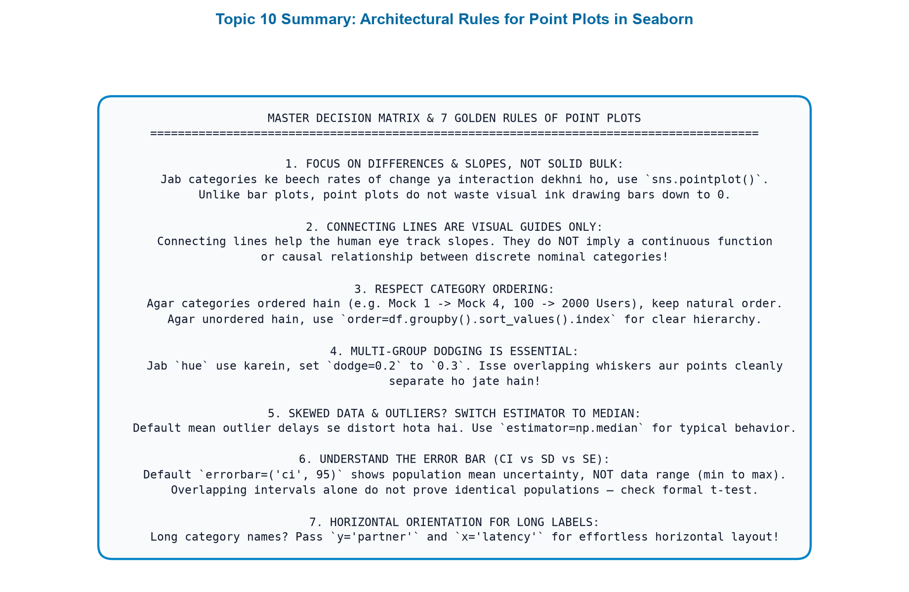
Agle topic me hum seekhenge Strip Plots (sns.stripplot()) aur Swarm Plots (sns.swarmplot()): Jab aapko data ko aggregate karke point nahi banana, balki har ek individual data point ko uske exact position par scatter karke dekhna ho bina kisi point ko overlap kiye!